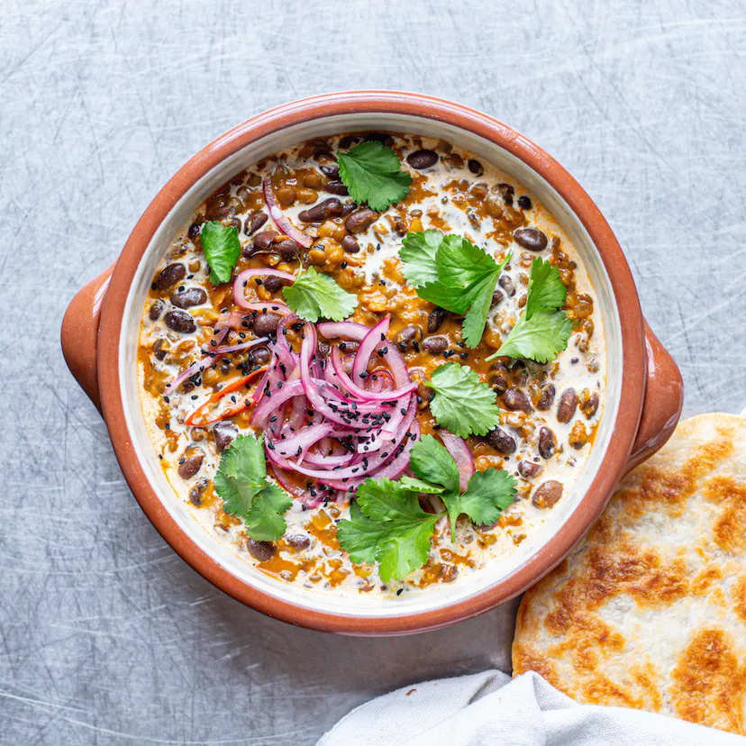

Black Bean Makhani Dhal

Description
Dhal makhani is the Godfather of all dhals. This opulent dish from Sarah Woods is rich and decadent and bows to no other.
Ingredients
- 200g Brown Lentils
- 1 Tsp Coriander Seeds
- 4 Green Cardamom Pods
- 2 Tsp Cumin Seeds
- 5cm Cassia Bark
- 4 Cloves
Steps
- First cook the brown lentils – you’ll need a large lidded saucepan. Brown lentils don’t often need a soak and will cook in under 30 mins. Read the packet instructions, and cook until tender (please don’t overcook them into a mush). You need three to four times the volume of water to lentils, so 3-4 cups of water. Bring to a rapid boil, then reduce to a simmer. Skim off any scum, and don’t allow the pan to go dry. Remove from the heat, and set aside.
- Toast the coriander seeds in a dry frying pan and transfer to a pestle and mortar. Lightly grind – they’ll still have some texture – and set aside. Add your cardamom seeds to the mortar, with a pinch of salt to act as an abrasive, and grind to a powder.
- Now make the tarka, the foundation of every curry. In a large sauté pan or similar, activate your whole spices – cumin seeds, cassia bark, cloves, dried chilli and star anise – in 3 or 4 tablespoons of oil on a medium to high heat. Dice the onion, finely grate the ginger and garlic and mince the chilli.